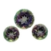
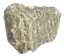
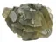
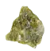

Correspondence Grimoire
Astral Projection

Azotic Topaz
Chrysotile in SerpentineClear Quartz
Hanksite
HeliodorHematiteDefinition
Astral travel is an innate human capacity to move through dimensions of awareness beyond the physical during sleep. Many hold that this occurs nightly regardless of whether the traveler retains any memory of it. Common signs include waking with the vivid sensation of dropping back into the body, or dreaming with a clarity so complete it is indistinguishable from waking life.
Astral projection is the deliberate practice of drawing consciousness out of the physical body to journey through space and/or time while the body rests in sleep or trance.
Physical and Astral Manifestation
Travel typically takes place on the astral plane, but it may also register on the physical plane in ways that others can perceive, creating the phenomenon of a single person appearing in two locations simultaneously.
Related Practices
Astral projection shares territory with lucid dreaming, hedge riding, and shamanic journeying, though it is a distinct discipline with its own techniques, tools, and safety considerations.
The Astral Cord
In some occult traditions, a thin silvery cord tethers the travelling soul to the resting body throughout the entire journey, functioning as a kind of permanent astral lifeline. No matter how far the soul wanders, this cord ensures a safe return, much as Ariadne's thread once guided Theseus through the labyrinth and back out again.
Methods of Travel
Projection can be undertaken from a waking state as well as during sleep, though the dream soul often resists departure while ordinary consciousness is still active. Sleep opens the gate. Building skill through waking practice alongside the study of lucid dreaming increases the likelihood of conscious dream travel. Some practitioners find the ability comes quickly; others develop it over many years. The discipline descends from shamanic traditions and draws on a wide range of tools and methods. Whether attempted awake or asleep, the same protective measures used in any dream working should be applied.
Safety Guidelines
Returning to the Body
Re-entry at the end of a journey is almost always effortless. The natural act of waking reunites body and soul, ideally as a gradual and comfortable process. Difficulty arises primarily when the sleeper is startled awake suddenly, which can produce a physical jolt, a brief moment of panic, or disorientation. In rare cases this may contribute to soul loss.
Beginning Astral Travel Techniques
Basic Astral Projection
A foundational practice method, intended to be performed initially while awake. Regular repetition builds proficiency over time, though some develop the skill quickly while others require extended practice. Early progress is sometimes followed by prolonged plateaus.
- Lie down, let the body relax fully, and close the eyes.
- Form a clear inner image of yourself standing at the foot of the bed, looking back at your own resting form.
Botanically Assisted Journeys
In modern practice, astral projection is primarily a mental and magickal discipline. Botanicals and crystals may support the process but do not generate the experience on their own. Some plants can be used to produce related states that resemble astral travel, though not identically. The key distinction is control: conscious projection prioritises the practitioner's agency, while botanically assisted journeys surrender varying degrees of that control to the plant.
This category of practice is a continuation of shamanic traditions found across many cultures. Vision-producing ointments, sometimes capable of inducing shared experiences among a group, appear worldwide, and frequently involve the sensation of flight.
Witches' Flying Ointments
Certain ointments and salves were reportedly used to produce the experience of flying to witches' sabbats. Two explanations have been proposed, and they are not mutually exclusive: the travellers were engaged in genuine shamanic journeying, or the ointments produced altered and erotic states, with the broomstick serving a function unrelated to flight. Ointments were applied where skin absorption is most effective, such as the wrists.
Historical formulas have been subjected to scientific testing, and the findings broadly support the theory that topical application of many of these preparations does produce a flight sensation.
Flying ointment ingredients fall into three categories, which may overlap:
- Substances with genuine vision-producing properties
- Toxic substances
- Repellent or disturbing substances
Historical Context
The skill required to use these ingredients safely would have indicated serious botanical and shamanic training. The bulk of surviving documentation was obtained under torture, making it nearly impossible to separate genuine practice from statements coerced by interrogators.
Any fat, whether animal or vegetable in origin, can serve as a carrier for an ointment base. Historians generally read the recurrence of certain disturbing ingredients in trial confessions as a reflection of the interrogation context and the political pressures of the period, particularly around midwifery and reproductive knowledge, rather than as evidence of actual use.
A 1435 account suggests that at least some contemporaries understood these journeys as visionary rather than physical: "A woman allegedly rubbed herself with ointment while seated in a large kneading trough. She immediately went to sleep and dreamed of flight. However she shook so vigorously that she fell out and injured her head."